Analisis Data Excel
Bagian ini menggambarkan fitur canggih yang ditawarkan Excel untuk menganalisis data
Sort | Filter | Conditional Formatting | Charts | Tabel Pivot | Tabel | What-If Analysis | Solver | Analysis ToolPak
Satu Kolom | Beberapa Kolom | Urutan Urutkan Kustom | Mengurutkan berdasarkan Warna | Daftar Terbalik | Daftar Acak | Fungsi SORT
Anda dapat mengurutkan data Excel Anda pada satu kolom atau beberapa kolom. Anda dapat mengurutkan dalam urutan menaik atau menurun.
Untuk mengurutkan pada satu kolom, jalankan langkah-langkah berikut.
-
Klik sel mana saja di kolom yang ingin Anda urutkan.

-
Untuk mengurutkan dalam urutan menaik , pada tab Data, dalam grup Urutkan & Filter, klik AZ.
Hasil:
Catatan : untuk mengurutkan dalam urutan menurun, klik ZA.
Untuk mengurutkan pada beberapa kolom, jalankan langkah-langkah berikut.
-
Pada tab Data, di grup Urutkan & Filter, klik Urutkan.

Kotak dialog Urutkan muncul.
-
Pilih Nama Belakang dari daftar tarik-turun 'Sort by'.

- Klik Tambah Tingkat.
-
Pilih Penjualan dari daftar tarik-turun 'Then by'.
-
Klik Oke.
Hasil. Catatan diurutkan berdasarkan Nama Belakang pertama dan Penjualan kedua.
Contoh Penggunaan Sort
Bab ini memberikan gambaran umum tentang beberapa operasi jangkauan yang sangat penting.
Contoh Penggunaan Sort Bab ini memberikan gambaran umum tentang beberapa operasi jangkauan yang sangat penting.
Anda dapat menggunakan Excel untuk mengurutkan data dalam urutan khusus. Pada contoh di bawah ini, kami ingin mengurutkan berdasarkan Prioritas (Tinggi, Normal, Rendah).
-
Klik sel mana saja di dalam kumpulan data.
-
Pada tab Data, di grup Urutkan & Filter, klik Urutkan.
Kotak dialog Urutkan muncul.
- Pilih Prioritas dari daftar drop-down 'Sort by'.
-
Pilih Daftar Kustom dari daftar drop-down 'Order'.

Kotak dialog Daftar Kustom muncul.
- Ketik entri daftar.
-
Klik Oke.
-
Klik OK lagi.

Hasil. Rekaman diurutkan berdasarkan Prioritas (Tinggi, Normal, Rendah).
Contoh ini mengajarkan Anda cara mengurutkan data berdasarkan warna di Excel.

- Klik salah satu sel di dalam kumpulan data.
-
Pada tab Data, di grup Urutkan & Filter, klik Urutkan.
Kotak dialog Urutkan muncul.
-
Urutkan berdasarkan Nama Belakang (atau kolom lainnya), urutkan pada Warna Sel (Anda juga dapat mengurutkan pada Warna Font dan Ikon Sel), dan pilih warna hijau untuk tingkat pertama.

- Klik 'Copy Level' dua kali dan pilih warna lain.
-
Klik Oke.

Hasil.
Artikel ini mengajarkan Anda bagaimana untuk membalikkan sebuah daftar di Excel . Misalnya, kita ingin membalik daftar di kolom A di bawah ini.
- Masukkan nilai 1 ke dalam sel B1 dan nilai 2 ke dalam sel B2.
-
Pilih rentang B1:B2, klik sudut kanan bawah rentang ini, dan seret ke bawah ke sel B8.

- Klik sembarang nomor dalam daftar di kolom B.
-
Untuk mengurutkan dalam urutan menurun, pada tab Data, dalam grup Sort & Filter, klik ZA.

Hasil. Tidak hanya daftar di kolom B, tetapi juga daftar di kolom A telah dibalik.

Artikel ini mengajarkan Anda cara mengacak (mengacak) daftar di Excel . Misalnya, kami ingin mengacak daftar di kolom A di bawah ini.
- Pilih sel B1 dan masukkan fungsi RAND().
-
Klik di sudut kanan bawah sel B1 dan seret ke bawah ke sel B8.

- Klik sembarang nomor dalam daftar di kolom B.
-
Untuk mengurutkan dalam urutan menurun, pada tab Data, dalam grup Sort & Filter, klik ZA.
Hasil. Daftar acak di kolom A (diurutkan berdasarkan angka acak di atas).

Catatan : angka acak berubah setiap kali sel pada lembar dihitung. Jika Anda tidak menginginkan ini, cukup salin angka acak dan tempel sebagai nilai.
Gunakan fungsi SORT ajaib di Excel 365 untuk mengurutkan data Excel Anda pada satu kolom atau beberapa kolom. Mari kita coba.
-
Fungsi SORT sederhana di bawah ini hanya memiliki 1 argumen (A2:D15). Secara default, fungsi SORT mengurutkan berdasarkan kolom pertama, dalam urutan menaik.

Catatan : fungsi larik dinamis ini, dimasukkan ke dalam sel F2, mengisi beberapa sel. Wow! Perilaku ini di Excel 365 disebut menumpahkan.
-
Gunakan argumen kedua dari fungsi SORT untuk mengurutkan menurut kolom yang berbeda. Fungsi SORT di bawah ini mengurutkan berdasarkan kolom kedua.

Catatan : hanya edit rumus di sel F2. Excel akan melakukan sisanya.
-
Gunakan argumen ketiga dari fungsi SORT untuk mengurutkan dalam urutan yang berbeda. Fungsi SORT di bawah ini mengurutkan berdasarkan kolom pertama, dalam urutan menurun.

Catatan : gunakan 1 untuk mengurutkan dalam urutan menaik, gunakan -1 untuk mengurutkan dalam urutan menurun.
-
Untuk mengurutkan pada beberapa kolom, cukup berikan konstanta array. Misalnya, urutkan berdasarkan Nama Belakang pertama dan Penjualan kedua.
-
Terakhir, fungsi SORT lanjutan di bawah ini mengurutkan berdasarkan Nama Belakang terlebih dahulu (dalam urutan menaik) dan berdasarkan Penjualan kedua (dalam urutan menurun). Cukup keren, ya?
Filter Angka dan Teks | Filter Tanggal | Filter Tingkat Lanjut | Formulir Data | Hapus Duplikat | Menguraikan Data | Subtotal | Nilai Unik | Fungsi FILTER Excel 365
Filter data Excel Anda jika Anda hanya ingin menampilkan rekaman yang memenuhi kriteria tertentu.
- Klik salah satu sel di dalam kumpulan data.
-
Pada tab Data, di grup Urutkan & Filter, klik Filter.

Panah di header kolom muncul.

- Klik panah di sebelah Negara.
-
Klik Select All untuk menghapus semua kotak centang, dan klik kotak centang di sebelah USA.

-
Klik Oke.
Hasil. Excel hanya menampilkan penjualan di AS.

- Klik panah di sebelah Quarter.
-
Klik Select All untuk menghapus semua kotak centang, dan klik kotak centang di sebelah Qtr 4.

-
Klik Oke.
Hasil. Excel hanya menampilkan penjualan di AS dalam Qtr 4.

-
Untuk menghapus filter, pada tab Data, di grup Sort & Filter, klik Clear. Untuk menghapus filter dan panah, klik Filter.

Ada cara yang lebih cepat untuk memfilter data Excel.
-
Pilih sel.
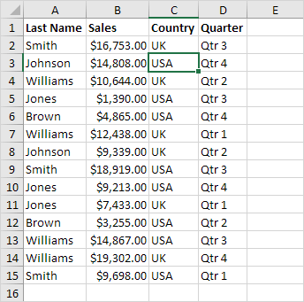
-
Klik kanan, lalu klik Filter, Filter by Selected Cell's Value.
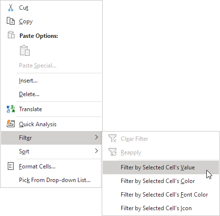
Hasil. Excel hanya menampilkan penjualan di AS.
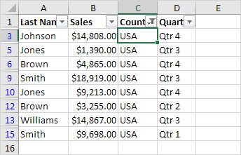
Catatan: cukup pilih sel lain di kolom lain untuk memfilter kumpulan data ini lebih lanjut.
Contoh ini mengajarkan Anda cara menerapkan filter angka dan filter teks untuk hanya menampilkan rekaman yang memenuhi kriteria tertentu.
- Klik salah satu sel di dalam kumpulan data.
-
Pada tab Data, di grup Urutkan & Filter, klik Filter.
Panah di header kolom muncul.
Untuk menerapkan filter angka, jalankan langkah-langkah berikut.
- Klik panah di sebelah Penjualan.
-
Klik Filter Angka (opsi ini tersedia karena kolom Penjualan berisi data numerik) dan pilih Lebih Besar Dari dari daftar.
-
Masukkan 10.000 dan klik OK.

Hasil. Excel hanya menampilkan catatan di mana Penjualan lebih besar dari $10.000.

Catatan: Anda juga dapat menampilkan catatan yang sama dengan nilai, kurang dari nilai, di antara dua nilai, catatan x teratas, catatan yang di atas rata-rata, dll. Langit adalah batasnya!
Untuk menerapkan filter teks, jalankan langkah-langkah berikut.
- Klik panah di sebelah Nama Belakang.
-
Klik Filter Teks (opsi ini tersedia karena kolom Nama Belakang berisi data teks) dan pilih Sama dengan dari daftar.

-
Masukkan ?m* dan klik OK.
Catatan: Tanda tanya (?) cocok dengan tepat satu karakter. Tanda bintang (*) cocok dengan serangkaian karakter nol atau lebih.
Hasil. Excel hanya menampilkan catatan di mana karakter kedua Nama Belakang sama dengan m.

Catatan: Anda juga dapat menampilkan catatan yang dimulai dengan karakter tertentu, diakhiri dengan karakter tertentu, berisi atau tidak berisi karakter tertentu, dll. Langit adalah batasnya!
Contoh ini mengajarkan Anda cara menerapkan filter tanggal untuk hanya menampilkan rekaman yang memenuhi kriteria tertentu.
- Klik salah satu sel di dalam kumpulan data.
-
Pada tab Data, di grup Urutkan & Filter, klik Filter.
Panah di header kolom muncul.

- Klik panah di sebelah Tanggal.
-
Klik Select All untuk menghapus semua kotak centang, klik tanda + di sebelah 2015, dan klik kotak centang di sebelah Januari.

-
Klik Oke.
Hasil. Excel hanya menampilkan penjualan pada tahun 2015, pada bulan Januari.
- Klik panah di sebelah Tanggal.
- Klik Select All untuk memilih semua kotak centang.
-
Klik Filter Tanggal (opsi ini tersedia karena kolom Tanggal berisi tanggal) dan pilih Bulan Terakhir dari daftar.

Hasil. Excel hanya menampilkan penjualan bulan lalu.
Catatan: filter tanggal ini dan banyak filter tanggal lainnya bergantung pada tanggal hari ini.
Dan Kriteria | Or Kriteria | Rumus sebagai Kriteria
Contoh ini mengajarkan Anda bagaimana menerapkan filter lanjutan di Excel untuk hanya menampilkan catatan yang memenuhi kriteria kompleks.
Saat Anda menggunakan Filter Tingkat Lanjut, Anda harus memasukkan kriteria pada lembar kerja. Buat rentang Kriteria (batas biru di bawah hanya untuk ilustrasi) di atas kumpulan data Anda. Gunakan header kolom yang sama. Pastikan setidaknya ada satu baris kosong antara rentang Kriteria dan kumpulan data Anda.
Untuk menampilkan penjualan di AS dan di Qtr 4, lakukan langkah-langkah berikut.
-
Masukkan kriteria yang ditunjukkan di bawah ini pada lembar kerja.
- Klik salah satu sel di dalam kumpulan data.
-
Pada tab Data, di grup Urutkan & Filter, klik Lanjutan.
- Klik pada kotak Criteria range dan pilih range A1:D2 (biru).
-
Klik Oke.

Perhatikan opsi untuk menyalin kumpulan data yang difilter ke lokasi lain dan hanya menampilkan catatan unik (jika kumpulan data Anda berisi duplikat).
Hasil.

Tidak ada ilmu roket sejauh ini. Kami dapat mencapai hasil yang sama dengan filter normal. Kami membutuhkan Filter Lanjutan untuk kriteria Or.
Untuk menampilkan penjualan di AS di Qtr 4 atau di Inggris di Qtr 1, lakukan langkah-langkah berikut.
- Masukkan kriteria yang ditunjukkan di bawah ini pada lembar kerja.
- Pada tab Data, di grup Sortir & Filter, klik Lanjutan, dan sesuaikan rentang Kriteria ke rentang A1:D3 (biru).
-
Klik Oke.

Hasil.

Untuk menampilkan penjualan di AS di Qtr 4 lebih besar dari $10.000 atau di Inggris di Qtr 1, jalankan langkah-langkah berikut.
- Masukkan kriteria (+rumus) yang ditunjukkan di bawah ini pada lembar kerja.
- Pada tab Data, di grup Sort & Filter, klik Advanced, dan sesuaikan rentang Kriteria ke rentang A1:E3 (biru).
-
Klik Oke.

Hasil.

Catatan: selalu tempatkan rumus di kolom baru. Jangan gunakan label kolom atau gunakan label kolom yang tidak ada dalam kumpulan data Anda. Buat referensi relatif ke sel pertama di kolom (B6). Rumus harus mengevaluasi ke TRUE atau FALSE.
Data Formulir di Excel memungkinkan Anda untuk menambahkan, mengedit, dan catatan delete (baris) dan hanya menampilkan catatan-catatan yang memenuhi kriteria tertentu. Terutama ketika Anda memiliki baris yang lebar dan Anda ingin menghindari pengguliran berulang ke kanan dan kiri, formulir data dapat berguna.
-
Buka file Excel yang dapat diunduh.

- Tambahkan perintah Formulir ke Toolbar Akses Cepat.
- Klik perintah Formulir.
-
Gunakan tombol Temukan Sebelumnya dan Temukan Berikutnya untuk beralih dengan mudah dari satu rekaman (baris) ke rekaman lainnya.
Catatan: gunakan tombol Baru atau Hapus untuk menambah atau menghapus rekaman. Setelah Anda mulai mengedit rekaman, Anda dapat menggunakan tombol Pulihkan untuk membatalkan perubahan apa pun yang Anda buat.
- Untuk menampilkan hanya record yang memenuhi kriteria tertentu, klik tombol Criteria.
-
Masukkan kriteria dan klik tombol Form.

-
Sekarang, saat Anda menggunakan tombol Temukan Sebelumnya dan Temukan Berikutnya, Anda hanya akan melihat catatan yang memenuhi kriteria ini. Dalam contoh kita, hanya mencatat 13.
Catatan: untuk mengedit kriteria, klik tombol Kriteria lagi. Untuk menutup formulir data, klik tombol Tutup.
Contoh ini mengajarkan Anda cara menghapus duplikat di Excel.
- Klik salah satu sel di dalam kumpulan data.
-
Pada tab Data, dalam grup Alat Data, klik Hapus Duplikat.

Kotak dialog berikut muncul.
-
Biarkan semua kotak centang dicentang dan klik OK.
Hasil. Excel menghapus semua baris identik (biru) kecuali baris identik pertama yang ditemukan (kuning).


Untuk menghapus baris dengan nilai yang sama di kolom tertentu, jalankan langkah-langkah berikut.
- Misalnya, hapus baris dengan Nama Belakang dan Negara yang sama.
-
Periksa Nama Belakang dan Negara dan klik OK.

Hasil. Excel menghapus semua baris dengan Nama Belakang dan Negara yang sama (biru) kecuali untuk contoh pertama yang ditemukan (kuning).

Mari kita lihat satu lagi fitur Excel keren yang menghapus duplikat. Anda dapat menggunakan Filter Tingkat Lanjut untuk mengekstrak baris unik (atau nilai unik dalam kolom).
-
Pada tab Data, dalam grup Sort & Filter, klik Advanced.
Kotak dialog Filter Lanjutan muncul.
- Klik Salin ke lokasi lain.
- Klik pada kotak List range dan pilih range A1:A17 (lihat gambar di bawah).
- Klik pada kotak Salin ke dan pilih sel F1 (lihat gambar di bawah).
-
Periksa Catatan unik saja.
-
Klik Oke.
Hasil. Excel menghapus semua duplikat nama belakang dan mengirimkan hasilnya ke kolom F.
Catatan: pada langkah 8, alih-alih memilih rentang A1:A17, pilih rentang A1:D17 untuk mengekstrak baris unik.
-
Terakhir, Anda dapat menggunakan pemformatan bersyarat di Excel untuk menyorot nilai duplikat.

-
Atau gunakan pemformatan bersyarat di Excel untuk menyorot baris duplikat.
Tip: kunjungi halaman kami tentang menemukan duplikat untuk mempelajari lebih lanjut tentang trik ini.
Menguraikan data membuat data Anda lebih mudah dilihat. Dalam contoh ini kita akan menjumlahkan baris data terkait dan menciutkan sekelompok kolom.
-
Pertama, urutkan data pada kolom Perusahaan.

-
Pada tab Data, di grup Outline, klik Subtotal .

- Pilih kolom Company, kolom yang kita gunakan untuk outline lembar kerja kita.
- Gunakan fungsi Hitung.
- Centang kotak Perusahaan.
-
Klik Oke.

Hasil:

-
Untuk menciutkan sekelompok sel, klik tanda minus. Anda dapat menggunakan angka untuk menciutkan atau memperluas grup berdasarkan level. Misalnya, klik 2 untuk hanya menampilkan subtotal.

Catatan: klik 1 untuk hanya menampilkan Grand Count, klik 3 untuk menampilkan semuanya.
Untuk menciutkan sekelompok kolom, jalankan langkah-langkah berikut.
- Misalnya, pilih kolom A dan B.
-
Pada tab Data, di grup Outline, klik Group.
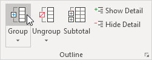
-
Klik tanda minus di atas kolom C (akan berubah menjadi tanda plus).
Hasil:

-
Untuk menghapus kerangka, klik sel mana pun di dalam kumpulan data dan pada tab Data, di grup Kerangka, klik Subtotal, Hapus semua.
Baris Tersembunyi oleh Filter | Baris Tersembunyi Secara Manual
Gunakan fungsi SUBTOTAL di Excel alih-alih SUM, COUNT, MAX, dll. untuk mengabaikan baris yang disembunyikan oleh filter atau untuk mengabaikan baris yang disembunyikan secara manual.
-
Misalnya, fungsi SUM di bawah ini menghitung total penjualan.

- Terapkan filter.
-
Fungsi SUM menyertakan baris yang disembunyikan oleh filter.

-
Fungsi SUBTOTAL mengabaikan baris yang disembunyikan oleh filter dan menghitung hasil yang benar.
Catatan: 109 adalah argumen untuk Sum jika Anda menggunakan fungsi SUBTOTAL.
-
Tidak mudah untuk mengingat argumen mana yang termasuk dalam fungsi yang mana. Untungnya, fitur AutoComplete di Excel membantu Anda dalam hal ini.

Catatan: daripada menggunakan 101 (AVERAGE) untuk argumen pertama, Anda juga dapat menggunakan 1 (AVERAGE), daripada menggunakan 102 (COUNT), Anda juga dapat menggunakan 2 (COUNT), dll. Saat memfilter data, tidak ada perbedaan antara angka 101-111 dan angka 1-11. Kami merekomendasikan menggunakan angka 101-111 karena Excel menggunakan angka-angka ini dalam baris total di akhir tabel.
-
Misalnya, fungsi SUM di bawah ini menjumlahkan rentang sel.

- Sembunyikan baris 2.
-
Fungsi SUM menyertakan baris yang disembunyikan secara manual.
-
Fungsi SUBTOTAL mengabaikan baris yang disembunyikan secara manual dan menghitung hasil yang benar.

Catatan: angka 101-111 mengabaikan baris yang disembunyikan secara manual. Namun, angka 1-11 menyertakan baris yang disembunyikan secara manual!
Ekstrak Nilai Unik | Filter untuk Nilai Unik | Fungsi Unik | Hapus Duplikat
Untuk mengekstrak nilai unik di Excel atau untuk memfilter nilai unik, gunakan Filter Tingkat Lanjut. Jika Anda memiliki Excel 365, cukup gunakan fungsi UNIK ajaib untuk mengekstrak nilai unik.
Saat menggunakan Filter Tingkat Lanjut di Excel, selalu masukkan label teks di bagian atas setiap kolom data.
-
Klik sel dalam rentang daftar.

-
Pada tab Data, di grup Urutkan & Filter, klik Tingkat Lanjut.
Kotak dialog Filter Lanjutan muncul.
- Klik Salin ke lokasi lain (lihat gambar di bawah).
- Klik di kotak Salin ke dan pilih sel C1.
- Periksa Catatan unik saja.
-
Klik Oke.

Hasil:
Catatan: Excel menghapus semua nilai duplikat (Singa di sel A7 dan Gajah di sel A9) dan mengirimkan nilai unik ke kolom C. Anda juga bisa menggunakan alat ini untuk mengekstrak baris unik di Excel.
Memfilter nilai unik di Excel adalah hal yang mudah.
-
Klik sel dalam rentang daftar.
-
Pada tab Data, di grup Urutkan & Filter, klik Tingkat Lanjut.
- Klik Filter daftar, di tempat (lihat gambar di bawah).
- Periksa Catatan unik saja.
-
Klik Oke.
Hasil:
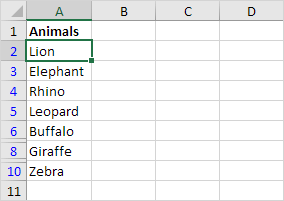
Catatan: baris 7 dan 9 disembunyikan. Untuk menghapus filter ini, pada tab Data, di grup Urutkan & Filter, klik Hapus. Anda juga dapat menggunakan alat ini untuk memfilter baris unik di Excel.
Jika Anda memiliki Excel 365, cukup gunakan fungsi UNIK ajaib untuk mengekstrak nilai unik.
-
Fungsi UNIQUE di bawah ini (tanpa argumen tambahan) mengekstrak nilai unik.

Catatan: fungsi larik dinamis ini, dimasukkan ke dalam sel C1, mengisi beberapa sel. Wow! Perilaku ini di Excel 365 disebut menumpahkan.
-
Fungsi UNIQUE di bawah ini mengekstrak nilai yang muncul tepat satu kali.

Catatan: fungsi UNIK memiliki 2 argumen opsional. Nilai default 0 (argumen kedua) memberi tahu fungsi UNIQUE untuk mengekstrak nilai dari larik vertikal. Nilai 1 (argumen ketiga) memberi tahu fungsi UNIQUE untuk mengekstrak nilai yang muncul tepat satu kali.
Untuk menemukan nilai unik (atau baris unik) dan menghapus nilai duplikat (atau baris duplikat) secara bersamaan, gunakan alat Hapus Duplikat di Excel.
Pada tab Data, dalam grup Alat Data, klik Hapus Duplikat.
Pada contoh di bawah ini, Excel menghapus semua baris identik (biru) kecuali baris identik pertama yang ditemukan (kuning).
Catatan: kunjungi halaman kami tentang menghapus duplikat untuk mempelajari lebih lanjut tentang alat Excel yang hebat ini.
.Gunakan fungsi FILTER ajaib di Excel 365 untuk mengekstrak catatan yang memenuhi kriteria tertentu. Fungsi FILTER cukup serbaguna.
-
Fungsi FILTER sederhana di bawah ini memiliki dua argumen dan mengekstrak semua catatan USA.

Catatan: Fungsi array dinamis ini, dimasukkan ke dalam sel F2, mengisi beberapa sel.
-
Fungsi FILTER dinamis di bawah ini mengekstrak semua catatan UK.
-
Fungsi FILTER memiliki argumen ketiga opsional. Gunakan argumen ini untuk menampilkan pesan yang ramah (bukan kesalahan #CALC! ) jika tidak ada catatan yang ditemukan.

-
Fungsi FILTER di bawah ini menggunakan operator perkalian (*) untuk mengekstrak semua catatan di mana Penjualan lebih besar dari $ 10.000 dan Negara sama dengan "USA".

-
Fungsi FILTER di bawah ini menggunakan operator tambahan (+) untuk mengekstrak semua catatan di mana Nama Belakang sama dengan "Smith" atau Nama Belakang sama dengan "Brown".
-
Tambahkan fungsi SORT untuk mengurutkan catatan menurut kolom pertama.

Catatan: secara default, fungsi SORT di Excel 365 mengurutkan menurut kolom pertama, dalam urutan naik.
Sorot Aturan Sel | Clear Rules | Aturan Atas/Bawah | Pemformatan Bersyarat dengan Rumus | Kelola Aturan | Data Bars | Skala Warna | Set Ikon | Temukan Duplikat | Baris Warna Alternatif | Bandingkan Dua Daftar | Aturan yang Bertentangan | Heat Map
Pemformatan bersyarat di Excel memungkinkan Anda untuk menyorot sel dengan warna tertentu, tergantung pada nilai sel.
Untuk menyorot sel yang lebih besar dari nilai, jalankan langkah-langkah berikut.
-
Pilih range A1:A10.

-
Pada tab Home, dalam grup Styles, klik Conditional Formatting.

-
Klik Highlight Cells Rules, Greater Than.

-
Masukkan nilai 80 dan pilih gaya pemformatan.
-
Klik Oke.
Hasil. Excel menyoroti sel yang lebih besar dari 80.

-
Ubah nilai sel A1 menjadi 81.
Hasil. Excel mengubah format sel A1 secara otomatis.

Catatan: Anda juga dapat menggunakan kategori ini (lihat langkah 3) untuk menyorot sel yang kurang dari nilai, di antara dua nilai, sama dengan nilai, sel yang berisi teks tertentu, tanggal (hari ini, minggu lalu, bulan depan, dll), duplikat atau nilai unik.
Untuk menghapus aturan pemformatan bersyarat, jalankan langkah-langkah berikut.
-
Pilih range A1:A10.

-
Pada tab Home, dalam grup Styles, klik Conditional Formatting.
-
Klik Clear Rules, Clear Rules from Selected Cells.

Untuk menyorot sel yang di atas rata-rata, jalankan langkah-langkah berikut.
-
Pilih range A1:A10.

-
Pada tab Home, dalam grup Styles, klik Conditional Formatting.
-
Klik Top/Bottom Rules, Above Average.

-
Pilih gaya pemformatan.
-
Klik Oke.
Hasil. Excel menghitung rata-rata (42,5) dan memformat sel yang berada di atas rata-rata ini.

Catatan: Anda juga dapat menggunakan kategori ini (lihat langkah 3) untuk menyorot n item teratas, n persen teratas, n item terbawah, n persen terbawah, atau sel yang berada di bawah rata-rata.
Tingkatkan keterampilan Excel Anda ke tingkat berikutnya dan gunakan rumus untuk menentukan sel mana yang akan diformat. Rumus yang menerapkan pemformatan bersyarat harus dievaluasi ke TRUE atau FALSE.
-
Pilih range A1:E5.

-
Pada tab Home, dalam grup Styles, klik Conditional Formatting.
-
Klik New Rule.

- Pilih 'Use a formula to determine which cells to format'.
- Masukkan rumus =ISODD(A1)
-
Pilih gaya pemformatan dan klik OK.
Hasil. Excel menyoroti semua angka ganjil.
Penjelasan: selalu tulis rumus untuk sel kiri atas dalam range yang dipilih. Excel secara otomatis menyalin rumus ke sel lain. Jadi, sel A2 berisi rumus =ISODD(A2), sel A3 berisi rumus =ISODD(A3), dll.
Berikut contoh lain.
-
Pilih range A2:D7.

- Ulangi langkah 2-4 di atas.
- Masukkan rumus =$C2="USA"
-
Pilih gaya pemformatan dan klik OK.

Hasil. Excel menyoroti semua pesanan USA.

Penjelasan: kami memperbaiki referensi ke kolom C dengan menempatkan simbol $ di depan huruf kolom ($C2). Akibatnya, sel B2, C2 dan sel D2 juga berisi rumus =$C2="USA", sel A3, B3, C3 dan D3 berisi rumus =$C3="USA", dll.
Untuk menampilkan semua aturan pemformatan bersyarat dalam buku kerja, gunakan Pengelola Aturan Conditional Formatting. Anda juga dapat menggunakan layar ini untuk membuat, mengedit, dan menghapus aturan.
-
Pilih sel A1.

-
Pada tab Home, dalam grup Styles, klik Conditional Formatting.
-
Klik Kelola Aturan.

Manajer Aturan Conditional Formatting muncul.
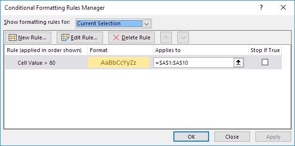Conditional Formatting">
Catatan: karena kami memilih sel A1, Excel menunjukkan aturan yang diterapkan pada range A1:A10.
-
Dari daftar drop-down, ubah Pilihan Saat Ini ke Lembar Kerja Ini, untuk melihat semua aturan pemformatan bersyarat di lembar kerja ini.

Catatan: klik New Rule, Edit Aturan, dan Clear Rules untuk membuat, mengedit, dan menghapus aturan.
Bilah data di Excel membuatnya sangat mudah untuk memvisualisasikan nilai dalam range sel. Bilah yang lebih panjang mewakili nilai yang lebih tinggi.
Untuk menambahkan bilah data, jalankan langkah-langkah berikut.
- Pilih range.
-
Pada tab Home, dalam grup Styles, klik Conditional Formatting.
-
Klik Data Bar dan klik subtipe.

Hasil:

Penjelasan: secara default, sel yang menyimpan nilai minimum (0 jika tidak ada nilai negatif) tidak memiliki bilah data dan sel yang menyimpan nilai maksimum (95) memiliki bilah data yang mengisi seluruh sel. Semua sel lainnya diisi secara proporsional.
-
Ubah nilainya.
Hasil. Excel memperbarui bilah data secara otomatis. Baca terus untuk menyesuaikan lebih lanjut bilah data ini.

- Pilih range A1:A10.
- Pada tab Home, dalam grup Styles, klik Conditional Formatting, Kelola Aturan.
-
Klik Edit aturan.
Excel meluncurkan kotak dialog Edit Aturan Pemformatan. Di sini Anda dapat menyesuaikan lebih lanjut bilah data Anda (Show Bar Only, Minimum dan Maximum, Bar Appearance, Negative Value and Axis, Bar Direction, dll).

Catatan: untuk langsung meluncurkan kotak dialog ini untuk aturan baru, pada langkah 3, klik Aturan Lainnya.
- Pilih Number dari daftar drop-down Minimum dan masukkan nilai 100. Pilih Number dari daftar drop-down Maximum dan masukkan nilai 150.
-
Klik OK dua kali.
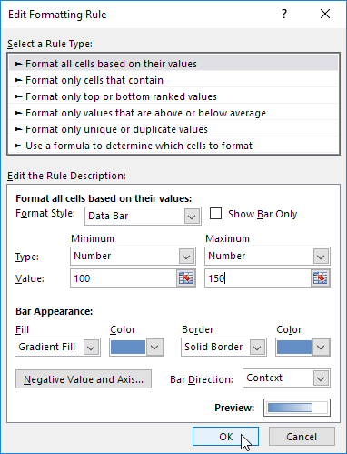
Hasil.

Penjelasan: sel yang menyimpan nilai 100 (jika ada) tidak memiliki bilah data dan sel yang menyimpan nilai 150 (jika ada) memiliki bilah data yang mengisi seluruh sel. Semua sel lainnya diisi secara proporsional.
Skala Warna di Excel membuatnya sangat mudah untuk memvisualisasikan nilai dalam range sel. Bayangan warna mewakili nilai dalam sel.
Untuk menambahkan skala warna, jalankan langkah-langkah berikut.
- Pilih range.
-
Pada tab Home, dalam grup Styles, klik Conditional Formatting.
-
Klik Color Scales dan klik subtipe.
Hasil:

Penjelasan: secara default, untuk skala 3-Warna, Excel menghitung persentil ke-50 (juga dikenal sebagai median, nilai tengah, atau titik tengah). Sel yang memegang nilai minimum (9) berwarna merah. Sel yang memegang median (36) berwarna kuning, dan sel yang memegang nilai maksimum (80) berwarna hijau. Semua sel lainnya diwarnai secara proporsional.
Baca terus untuk menyesuaikan lebih lanjut skala warna ini.
- Pilih range A1:A7.
-
Pada tab Home, dalam grup Styles, klik Conditional Formatting, Kelola Aturan.
-
Klik Edit aturan.
Excel meluncurkan kotak dialog Edit Aturan Pemformatan. Di sini Anda dapat menyesuaikan lebih lanjut skala warna Anda (Gaya Format, Minimum, Titik Tengah dan Maksimum, Warna, dll).

Catatan: untuk langsung meluncurkan kotak dialog ini untuk aturan baru, pada langkah 3, klik Aturan Lainnya.
- Pilih Skala 2-Warna dari daftar drop-down Format Style dan pilih putih dan biru.
-
Klik OK dua kali.

Hasil.

Kumpulan Ikon di Excel membuatnya sangat mudah untuk memvisualisasikan nilai dalam range sel. Setiap ikon mewakili range nilai.
Untuk menambahkan kumpulan ikon, jalankan langkah-langkah berikut.
- Pilih range.
-
Pada tab Home, dalam grup Styles, klik Conditional Formatting.
-
Klik Kumpulan Ikon dan klik subtipe.

Hasil:

Penjelasan: secara default, untuk 3 ikon, Excel menghitung persen ke-67 dan ke-33. Persen ke-67 = min + 0,67 * (maks-min) = 2 + 0,67 * (95-2) = 64,31. Persen ke-33 = min + 0,33 * (maks-min) = 2 + 0,33 * (95-2) = 32,69. Panah hijau akan ditampilkan untuk nilai yang sama dengan atau lebih besar dari 64,31. Panah kuning akan ditampilkan untuk nilai kurang dari 64,31 dan sama dengan atau lebih besar dari 32,69. Panah merah akan ditampilkan untuk nilai kurang dari 32,69.
-
Ubah nilainya.
Hasil. Excel memperbarui set ikon secara otomatis. Baca terus untuk menyesuaikan lebih lanjut kumpulan ikon ini.

- Pilih range A1:A10.
-
Pada tab Home, dalam grup Styles, klik Conditional Formatting, Kelola Aturan.
-
Klik Edit aturan.
Excel meluncurkan kotak dialog Edit Aturan Pemformatan. Di sini Anda dapat menyesuaikan lebih lanjut set ikon Anda (Gaya Ikon, Urutan Ikon Terbalik, Hanya Tampilkan Ikon, Ikon, Nilai, Jenis, dll).

Catatan: untuk langsung meluncurkan kotak dialog ini untuk aturan baru, pada langkah 3, klik Aturan Lainnya.
-
Pilih 3 simbol (Tidak Dilingkari) dari daftar drop-down Icon Style. Pilih No Cell Icon dari daftar drop-down Icon kedua. Ubah Types menjadi Number dan ubah Values menjadi 100 dan 0. Pilih simbol lebih besar dari (>) di sebelah nilai 0.
-
Klik OK dua kali.

Hasil.

Nilai Duplikat | Triplicates | Baris Duplikat
Contoh ini mengajarkan Anda cara menemukan nilai duplikat (atau rangkap tiga) dan cara menemukan baris duplikat di Excel.
Untuk menemukan dan menyorot nilai duplikat di Excel, jalankan langkah-langkah berikut.
-
Pilih range A1:C10.
-
Pada tab Home, dalam grup Styles, klik Conditional Formatting.
-
Klik Sorot Aturan Sel, Nilai Duplikat.

-
Pilih gaya pemformatan dan klik OK.
Hasil. Excel menyoroti nama duplikat.

Catatan: pilih Unik dari daftar drop-down pertama untuk menyorot nama unik.
Secara default, Excel menyoroti duplikat (Juliet, Delta), rangkap tiga (Sierra), dll. (lihat gambar sebelumnya). Jalankan langkah-langkah berikut untuk menyorot rangkap tiga saja.
-
Pertama, hapus aturan pemformatan bersyarat sebelumnya.
- Pilih range A1:C10.
-
Pada tab Home, dalam grup Styles, klik Conditional Formatting.
-
Klik New Rule.
- Pilih 'Use a formula to determine which cells to format'.
- Masukkan rumus = COUNTIF ($A$1:$C$10,A1)=3.
-
Pilih gaya pemformatan dan klik OK.

Hasil. Excel menyoroti nama rangkap tiga.

Penjelasan: = COUNTIF ($A$1:$C$10,A1) menghitung jumlah nama dalam range A1:C10 yang sama dengan nama di sel A1. Jika COUNTIF($A$1:$C$10,A1) = 3, Excel memformat sel A1. Selalu tulis rumus untuk sel kiri atas dalam range yang dipilih (A1:C10). Excel secara otomatis menyalin rumus ke sel lain. Jadi, sel A2 berisi rumus =COUNTIF($A$1:$C$10,A2)=3, sel A3 =COUNTIF($A$1:$C$10,A3)=3, dll. Perhatikan bagaimana kita membuat referensi absolut ($A$1:$C$10) untuk memperbaiki referensi ini.
Catatan: Anda dapat menggunakan formula apa pun yang Anda suka. Misalnya, gunakan rumus ini =COUNTIF($A$1:$C$10,A1)>3 untuk menyorot nama yang muncul lebih dari 3 kali.
Untuk menemukan dan menyorot baris duplikat di Excel, gunakan COUNTIFS (dengan huruf S di akhir) alih-alih COUNTIF.
-
Pilih range A1:C10.
-
Pada tab Home, dalam grup Styles, klik Conditional Formatting.
-
Klik New Rule.
- Pilih 'Use a formula to determine which cells to format'.
- Masukkan rumus =COUNTIFS(Hewan,$A1,Benua,$B1,Negara,$C1)>1.
-
Pilih gaya pemformatan dan klik OK.

Catatan: Nama Range Hewan mengacu pada range A1:A10, Nama Range Benua mengacu pada range B1:B10 dan Nama Range Negara mengacu pada range C1:C10. =COUNTIFS(Animals,$A1,Continents,$B1,Countries,$C1) menghitung jumlah baris berdasarkan beberapa kriteria (Leopard, Afrika, Zambia).
Hasil. Excel menyoroti baris duplikat.

Penjelasan: jika COUNTIFS(Hewan,$A1, Benua,$B1,Negara,$C1) > 1, dengan kata lain, jika ada beberapa baris (Leopard, Afrika, Zambia), Excel memformat sel A1. Selalu tulis rumus untuk sel kiri atas dalam range yang dipilih (A1:C10). Excel secara otomatis menyalin rumus ke sel lain. Kami memperbaiki referensi ke setiap kolom dengan menempatkan simbol $ di depan huruf kolom ($A1, $B1 dan $C1). Akibatnya, sel A1, B1 dan C1 berisi rumus yang sama, sel A2, B2 dan C2 berisi rumus =COUNTIFS(Animals,$A2,Continents,$B2,Countries,$C2)>1, dll.
-
Terakhir, Anda dapat menggunakan alat Hapus Duplikat di Excel untuk menghapus baris duplikat dengan cepat. Pada tab Data, dalam grup Alat Data, klik Hapus Duplikat.

Pada contoh di bawah ini, Excel menghapus semua baris identik (biru) kecuali baris identik pertama yang ditemukan (kuning).
 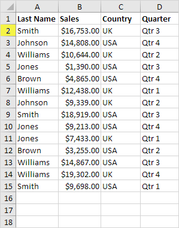
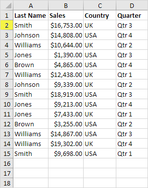Catatan: kunjungi halaman kami tentang menghapus duplikat untuk mempelajari lebih lanjut tentang alat Excel yang hebat ini.
Contoh ini menunjukkan cara menggunakan pemformatan bersyarat untuk menaungi baris alternatif. Mengarsir setiap baris lain dalam range membuatnya lebih mudah untuk membaca data Anda.
-
Pilih range.
-
Pada tab Home, dalam grup Styles, klik Conditional Formatting.
-
Klik New Rule.
- Pilih 'Use a formula to determine which cells to format'.
- Masukkan rumus =MOD(ROW(),2).
-
Pilih gaya pemformatan dan klik OK.

Hasil.

Penjelasan: fungsi MOD memberikan sisa pembagian. Fungsi ROW() mengembalikan nomor baris. Misalnya, untuk baris ketujuh, MOD(7,2) = 1 karena 7 dibagi 2 sama dengan 3 dengan sisa 1. Untuk baris kedelapan, MOD(8,2) = 0 karena 8 dibagi 2 sama dengan 4 dengan sisa 0. Akibatnya, semua baris ganjil menghasilkan 1 (TRUE) dan akan diarsir.
Contoh ini menjelaskan cara membandingkan dua daftar menggunakan pemformatan bersyarat. Misalnya, Anda mungkin memiliki dua daftar tim NFL.

Untuk menyorot tim di daftar pertama yang tidak ada di daftar kedua, jalankan langkah-langkah berikut.
- Pertama, pilih range A1:A18 dan beri nama firstList, pilih range B1:B20 dan beri nama secondList.
- Selanjutnya, pilih range A1:A18.
-
Pada tab Home, dalam grup Styles, klik Conditional Formatting.
-
Klik New Rule.
- Pilih 'Use a formula to determine which cells to format'.
- Masukkan rumus = COUNTIF (Daftar kedua,A1)=0.
-
Pilih gaya pemformatan dan klik OK.

Hasil. Miami Dolphins dan Tennessee Titans tidak ada dalam daftar kedua.
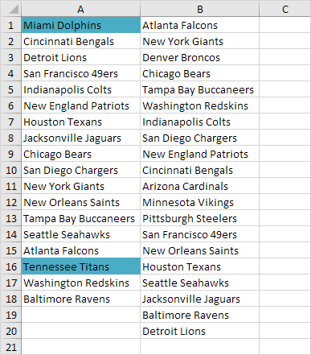
Penjelasan: = COUNTIF (secondList,A1) menghitung jumlah tim di SecondList yang sama dengan tim di sel A1. Jika COUNTIF(secondList,A1) = 0, tim di sel A1 tidak ada dalam daftar kedua. Akibatnya, Excel mengisi sel dengan warna latar belakang biru. Selalu tulis rumus untuk sel kiri atas dalam range yang dipilih (A1:A18). Excel secara otomatis menyalin rumus ke sel lain. Jadi, sel A2 berisi rumus =COUNTIF(secondList,A2)=0, sel A3 =COUNTIF(secondList,A3)=0, dst.
8. Untuk menyorot tim di daftar kedua yang tidak ada di daftar pertama, pilih range B1:B20, buat aturan baru menggunakan rumus =COUNTIF(firstList,B1)=0, dan atur formatnya menjadi isian oranye.
Hasil. Denver Broncos, Arizona Cardinals, Minnesota Vikings dan Pittsburgh Steelers tidak ada dalam daftar pertama.
Terkadang beberapa aturan pemformatan bersyarat dalam konflik Excel. Aturan yang lebih tinggi selalu menang. Contoh ini menggambarkan dua hasil yang berbeda.
-
Nilai 95 lebih tinggi dari 80 tetapi juga merupakan nilai tertinggi (Top 1). Format (isian kuning vs isian hijau dan warna teks kuning vs warna teks hijau) bertentangan. Aturan yang lebih tinggi selalu menang. Akibatnya, nilai 95 berwarna kuning.

Hasil:

-
Pindahkan aturan kedua ke atas. Nilai 95 adalah nilai tertinggi (Atas 1) tetapi juga lebih tinggi dari 80. Format (isian hijau vs isian kuning dan warna teks hijau vs warna teks kuning) bertentangan. Aturan yang lebih tinggi selalu menang. Hasilnya, nilai 95 berwarna hijau.

Hasil:

Catatan: hanya gunakan kotak centang Stop If True untuk kompatibilitas mundur dengan versi Microsoft Excel yang lebih lama.
Untuk membuat peta panas di Excel, cukup gunakan pemformatan bersyarat. Peta panas adalah representasi grafis dari data di mana nilai-nilai individual direpresentasikan sebagai warna.
Untuk membuat peta panas, jalankan langkah-langkah berikut.
-
Pilih range B3:M11.

-
Pada tab Home, dalam grup Styles, klik Conditional Formatting.
-
Klik Color Scales dan klik subtipe.

Hasil. Peta panas dengan angka.
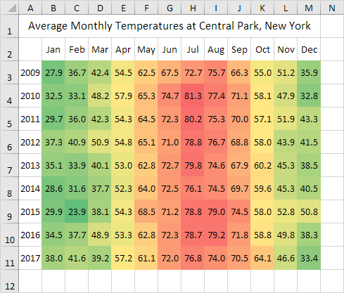
- Pilih range B3:M11.
-
Klik kanan, lalu klik Format Cells (atau tekan Ctrl+1).
- Pilih kategori Kustom.
-
Ketik kode format angka berikut: ;;;

-
Klik Oke.
Hasil. Sebuah peta panas di Excel.

Catatan: Anda dapat dengan jelas melihat bahwa musim panas 2014 di New York sejuk dan Natal 2015 di New York hangat.
Histogram | Descriptive Statistics | Anova | F-Tes | t-test | Rata-Rata Bergerak | Penghalusan Eksponensial | Korelasi | Regresi
Analysis ToolPak adalah add-in Excel program yang menyediakan alat Data Analysis untuk keuangan, data teknik statistik dan Analysis.
Untuk memuat add-in Analysis ToolPak, jalankan langkah-langkah berikut.
- Pada tab File, klik Opsi.
-
Di bawah Add-in, pilih Analysis ToolPak dan klik tombol Go.
-
Centang Analysis ToolPak dan klik OK.
-
Pada tab Data, di grup Analysis, Anda sekarang dapat mengklik Data Analysis.

Kotak dialog berikut di bawah ini muncul.
-
Misalnya, pilih Histogram dan klik OK untuk membuat Histogram di Excel.
Histogram
Contoh ini mengajarkan Anda cara membuat histogram di Excel.
-
Pertama, masukkan nomor bin (tingkat atas) di kisaran C4:C8.
-
Pada tab Data, dalam grup Analysis, klik Data Analysis.
Catatan: tidak dapat menemukan tombol Data Analysis? Klik di sini untuk memuat add-in Analysis ToolPak.
-
Pilih Histogram dan klik OK.
- Pilih Range A2:A19.
- Klik pada kotak Bin Range dan pilih range C4:C8.
- Klik tombol pilihan Output Range, klik pada kotak Output Range dan pilih sel F3.
-
Centang Chart Output.
-
Klik Oke.
- Klik legenda di sisi kanan dan tekan Delete.
- Beri label tempat sampah Anda dengan benar.
- Untuk menghilangkan spasi antar bar, klik kanan bar, klik Format Data Series dan ubah Gap Width menjadi 0%.
-
Untuk menambahkan batas, klik kanan bar, klik Format Data Series, klik ikon Fill & Line, klik Border dan pilih warna.
Hasil:
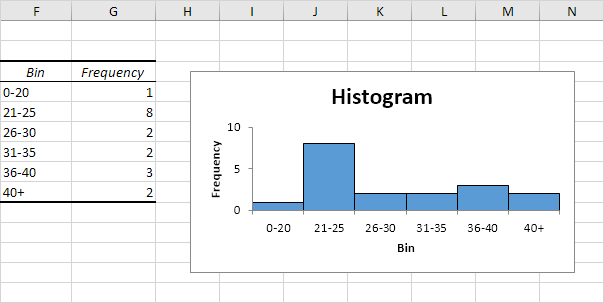
Jika Anda memiliki Excel 2016 atau yang lebih baru, cukup gunakan tipe bagan Histogram.
-
Pilih Range A1:A19.
-
Pada tab Insert, di grup Charts, klik simbol Histogram.
-
Klik Histogram.
Hasil. Histogram dengan 3 bin.
Catatan: Excel menggunakan aturan referensi normal Scott untuk menghitung jumlah nampan dan lebar nampan.
-
Klik kanan sumbu horizontal, lalu klik Format Axis.
Tampil Panel Format Axis.
-
Tentukan bin histogram. Kami akan menggunakan nomor bin yang sama seperti sebelumnya (lihat gambar pertama di halaman ini). Lebar nampan: 5. Jumlah nampan: 6. Nampan luapan: 40. Nampan underflow: 20.
Hasil:
Ingat, kami membuat histogram berikut menggunakan Analysis ToolPak (langkah 1-12).
Kesimpulan: label bin terlihat berbeda, tetapi histogramnya sama. 20 sama dengan 0-20, (20, 25] sama dengan 21-25, dst.
Descriptive Statistics
Anda dapat menggunakan add-in Analysis Toolpak untuk menghasilkan Descriptive Statistics. Misalnya, Anda mungkin memiliki skor 14 peserta untuk ujian.
Untuk menghasilkan Descriptive Statistics untuk skor ini, lakukan langkah-langkah berikut.
-
Pada tab Data, dalam grup Analysis, klik Data Analysis.
Catatan: tidak dapat menemukan tombol Data Analysis? Klik di sini untuk memuat add-in Analysis ToolPak.
-
Pilih Descriptive Statistics dan klik OK.
- Pilih Range A2:A15 sebagai Range Input.
- Pilih sel C1 sebagai Range Output.
-
Pastikan Summary statistics tercentang.
-
Klik Oke.
Hasil:
Anova
Contoh ini mengajarkan Anda bagaimana melakukan ANOVA faktor tunggal (Analysis varians) di Excel. Faktor tunggal atau ANOVA satu arah digunakan untuk menguji hipotesis nol bahwa rata-rata dari beberapa populasi semuanya sama.
Di bawah ini Anda dapat menemukan gaji orang-orang yang memiliki gelar di bidang ekonomi, kedokteran atau sejarah.
H 0 : 1 = 2 = 3
H 1 : paling sedikit salah satu cara berbeda.
Untuk melakukan ANOVA faktor tunggal, jalankan langkah-langkah berikut.
-
Pada tab Data, dalam grup Analysis, klik Data Analysis.
Catatan: tidak dapat menemukan tombol Data Analysis? Klik di sini untuk memuat add-in Analysis ToolPak.
-
Pilih Anova: Single Factor dan klik OK.
- Klik pada kotak Input Range dan pilih range A2:C10.
-
Klik pada kotak Output Range dan pilih sel E1.
-
Klik Oke.
Hasil:
Kesimpulan: jika F > F crit, kami menolak hipotesis nol. Ini adalah kasusnya, 15,196 > 3,443. Oleh karena itu, kami menolak hipotesis nol. Rata-rata dari ketiga populasi tidak semuanya sama. Setidaknya salah satu caranya berbeda. Namun, ANOVA tidak memberi tahu Anda di mana letak perbedaannya. Anda memerlukan t-Test untuk menguji setiap pasangan rata-rata.
F-Tes
Contoh ini mengajarkan Anda bagaimana melakukan F-Test di Excel. F-Test digunakan untuk menguji hipotesis nol bahwa varians dari dua populasi adalah sama.
Di bawah ini Anda dapat menemukan jam belajar 6 siswa perempuan dan 5 siswa laki-laki.
H 0 : σ 1 2 = σ 2 2
H 1 : σ 1 2 ≠ σ 2 2
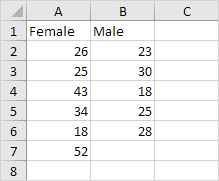
Untuk melakukan F-Test, jalankan langkah-langkah berikut.
-
Pada tab Data, dalam grup Analysis, klik Data Analysis.
Catatan: tidak dapat menemukan tombol Data Analysis? Klik di sini untuk memuat add-in Analysis ToolPak.
-
Pilih F-Test Two-Sample for Variances dan klik OK.
- Klik pada kotak Variable 1 Range dan pilih range A2:A7.
- Klik pada kotak Variable 2 Range dan pilih range B2:B6.
-
Klik pada kotak Output Range dan pilih sel E1.
-
Klik Oke.
Hasil:
Penting: pastikan bahwa varians dari Variabel 1 lebih tinggi dari varians dari Variabel 2. Hal ini terjadi, 160 > 21.7. Jika tidak, tukar data Anda. Hasilnya, Excel menghitung nilai F yang benar, yaitu rasio Varians 1 terhadap Varians 2 (F = 160 / 21,7 = 7,373).
Kesimpulan: jika F > F Kritis satu arah, kami menolak hipotesis nol. Ini kasusnya, 7,373 > 6,256. Oleh karena itu, kami menolak hipotesis nol. Varians dari kedua populasi tidak sama.
t-test
Contoh ini mengajarkan Anda bagaimana melakukan t-Test di Excel. t-Test digunakan untuk menguji hipotesis nol bahwa rata-rata dua populasi adalah sama.
Di bawah ini Anda dapat menemukan jam belajar 6 siswa perempuan dan 5 siswa laki-laki.
H 0 : 1 - 2 = 0
H 1 : 1 - 2 0
Untuk melakukan t-Test, jalankan langkah-langkah berikut.
- Pertama, lakukan F-Test untuk menentukan apakah varians dari dua populasi sama. Ini bukan kasusnya.
-
Pada tab Data, dalam grup Analysis, klik Data Analysis.
Catatan: tidak dapat menemukan tombol Data Analysis? Klik di sini untuk memuat add-in Analysis ToolPak.
-
Pilih t-Test: Two-Sample Assuming Unequal Variances dan klik OK.

- Klik pada kotak Variable 1 Range dan pilih range A2:A7.
- Klik pada kotak Variable 2 Range dan pilih range B2:B6.
- Klik pada kotak Hypothesized Mean Difference dan ketik 0 (H 0 : 1 - 2 = 0).
-
Klik pada kotak Output Range dan pilih sel E1.

-
Klik Oke.
Hasil:
Kesimpulan: Kami melakukan uji dua sisi (ketidaksetaraan). Jika t Stat < -t Critical two-tail atau t Stat > t Critical two-tail, kami menolak hipotesis nol. Ini tidak terjadi, -2,365 < 1,473 < 2,365. Oleh karena itu, kami tidak menolak hipotesis nol. Perbedaan yang diamati antara rata-rata sampel (33 - 24,8) tidak cukup meyakinkan untuk mengatakan bahwa rata-rata jumlah jam belajar antara siswa perempuan dan laki-laki berbeda secara signifikan.
Rata-Rata Bergerak (Moving Average)
Contoh ini mengajarkan Anda bagaimana menghitung rata-rata bergerak dari deret waktu di Excel. Rata-rata bergerak digunakan untuk menghaluskan ketidakteraturan (puncak dan lembah) untuk dengan mudah mengenali tren.
-
Pertama, mari kita lihat rangkaian waktu kita.
-
Pada tab Data, dalam grup Analysis, klik Data Analysis.
Catatan: tidak dapat menemukan tombol Data Analysis? Klik di sini untuk memuat add-in Analysis ToolPak.
-
Pilih Moving Average dan klik OK.
- Klik pada kotak Input Range dan pilih range B2:M2.
- Klik di kotak Interval dan ketik 6.
- Klik pada kotak Output Range dan pilih sel B3.
-
Klik Oke.
-
Buat grafik dari nilai-nilai ini.
Penjelasan: karena interval kita atur menjadi 6 maka moving average adalah rata-rata dari 5 titik data sebelumnya dan titik data saat ini. Akibatnya, puncak dan lembah dihaluskan. Grafik menunjukkan tren yang meningkat. Excel tidak dapat menghitung rata-rata bergerak untuk 5 titik data pertama karena titik data sebelumnya tidak cukup.
-
Ulangi langkah 2 sampai 8 untuk interval = 2 dan interval = 4.
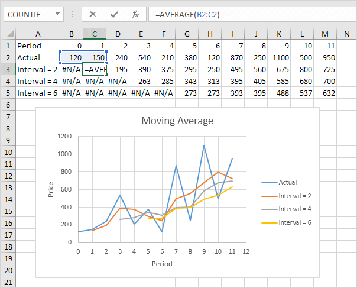
Kesimpulan: Semakin besar intervalnya, semakin banyak puncak dan lembah yang dihaluskan. Semakin kecil intervalnya, semakin dekat rata-rata bergerak ke titik data aktual.
Penghalusan Eksponensial (Exponential Smoothing)
Contoh ini mengajarkan Anda bagaimana menerapkan Penghalusan eksponensial ke deret waktu di Excel. Penghalusan eksponensial digunakan untuk menghaluskan ketidakteraturan (puncak dan lembah) untuk mengenali tren dengan mudah.
-
Pertama, mari kita lihat rangkaian waktu kita.
-
Pada tab Data, dalam grup Analysis, klik Data Analysis.
Catatan: tidak dapat menemukan tombol Data Analysis? Klik di sini untuk memuat add-in Analysis ToolPak.
-
Pilih Exponential Smoothing dan klik OK.
- Klik pada kotak Input Range dan pilih range B2:M2.
- Klik pada kotak Damping factor dan ketik 0.9.
- Klik pada kotak Output Range dan pilih sel B3.
-
Klik Oke.
-
Buat grafik dari nilai-nilai ini.
Penjelasan: karena kita set alpha menjadi 0.1, maka titik data sebelumnya diberi bobot yang relatif kecil sedangkan nilai mulus sebelumnya diberi bobot yang besar (yaitu 0.9). Grafik menunjukkan tren yang meningkat. Excel tidak dapat menghitung nilai mulus untuk titik data pertama karena tidak ada titik data sebelumnya. Nilai untuk titik data kedua sama dengan titik data sebelumnya.
-
Ulangi langkah 2 sampai 8 untuk alfa = 0,3 dan alfa = 0,8.
Kesimpulan: Semakin kecil alpha (semakin besar faktor redamannya), semakin banyak puncak dan lembah yang dihaluskan. Semakin besar alfa (semakin kecil faktor redaman), semakin dekat nilai yang dihaluskan dengan titik data aktual.
Korelasi
Koefisien korelasi (nilai antara -1 dan +1) memberitahu Anda seberapa kuat dua variabel terkait satu sama lain. Kita dapat menggunakan fungsi CORREL atau add-in Analysis Toolpak di Excel untuk menemukan koefisien korelasi antara dua variabel.
-
- Koefisien korelasi +1 menunjukkan korelasi positif yang sempurna. Ketika variabel X meningkat, variabel Y meningkat. Saat variabel X menurun, variabel Y menurun.

-
- Koefisien korelasi -1 menunjukkan korelasi negatif yang sempurna. Ketika variabel X meningkat, variabel Z menurun. Saat variabel X berkurang, variabel Z meningkat.
- - Koefisien korelasi mendekati 0 menunjukkan tidak ada korelasi.
Untuk menggunakan add-in Analysis Toolpak di Excel untuk menghasilkan koefisien korelasi antara beberapa variabel dengan cepat, lakukan langkah-langkah berikut.
-
Pada tab Data, dalam grup Analysis, klik Data Analysis.
Catatan: tidak dapat menemukan tombol Data Analysis? Klik di sini untuk memuat add-in Analysis ToolPak.
-
Pilih Correlation dan klik OK.
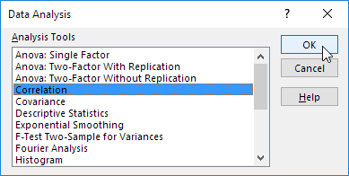
-
Misalnya, pilih Range A1:C6 sebagai Range Input.
- Centang Labels in first row.
- Pilih sel A8 sebagai Output Range.
-
Klik Oke.
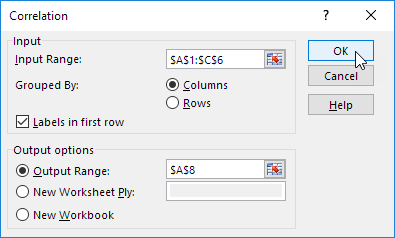
Hasil.

Kesimpulan: variabel A dan C berkorelasi positif (0,91). Variabel A dan B tidak berkorelasi (0,19). Variabel B dan C juga tidak berkorelasi (0,11). Anda dapat memverifikasi kesimpulan ini dengan melihat grafik.
Regresi (Regression)
Kotak R | Signifikansi F dan P-Nilai | Koefisien | Residu
Contoh ini mengajarkan Anda cara menjalankan Analysis Regression linier di Excel dan cara menginterpretasikan Output Ringkasan.
Di bawah ini Anda dapat menemukan data kami. Pertanyaan besarnya adalah: apakah ada hubungan antara Quantity Sold (Output) dan Price and Advertising (Input). Dengan kata lain: dapatkah kita memprediksi Quantity Sold jika kita mengetahui Price dan Advertising?

-
Pada tab Data, dalam grup Analysis, klik Data Analysis.
Catatan: tidak dapat menemukan tombol Data Analysis? Klik di sini untuk memuat add-in Analysis ToolPak.
-
Pilih Regression dan klik OK.

- Pilih Range Y (A1:A8). Ini adalah variabel prediktor (juga disebut variabel dependen).
- Pilih Range X (B1:C8). Ini adalah variabel penjelas (juga disebut variabel independen). Kolom-kolom ini harus berdekatan satu sama lain.
- Centang Label.
- Klik pada kotak Output Range dan pilih sel A11.
- Centang Residu.
-
Klik Oke.
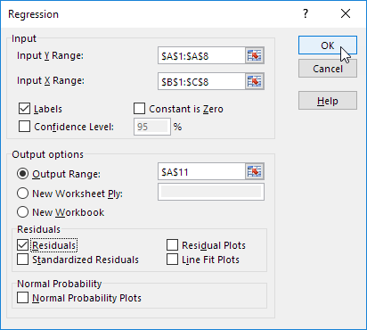
Excel menghasilkan Output Ringkasan berikut (dibulatkan ke 3 tempat desimal).
Kotak R
R Square sama dengan 0,962, yang sangat cocok. 96% variasi Quantity Sold dijelaskan oleh variabel independen Price dan Advertising. Semakin mendekati 1, semakin baik garis Regression (baca terus) cocok dengan data.

Signifikansi F dan P-nilai
Untuk memeriksa apakah hasil Anda dapat diandalkan (signifikan secara statistik), lihat Signifikansi F ( 0,001 ). Jika nilai ini kurang dari 0,05, Anda baik-baik saja. Jika Signifikansi F lebih besar dari 0,05, mungkin lebih baik untuk berhenti menggunakan kumpulan variabel independen ini. Hapus variabel dengan nilai P tinggi (lebih besar dari 0,05) dan jalankan kembali Regression hingga Signifikansi F turun di bawah 0,05.
Sebagian besar atau semua nilai P harus di bawah 0,05. Dalam contoh kita ini adalah kasusnya. ( 0,000, 0,001 dan 0,005 ).

Koefisien
Garis regresinya adalah: y = Quantity Sold = 8536.214 -835.722 * Price + 0.592 * Advertising. Dengan kata lain, untuk setiap kenaikan harga satu unit, Kuantitas Terjual berkurang menjadi 835.722 unit. Untuk setiap kenaikan unit dalam Periklanan, Kuantitas Terjual meningkat sebesar 0,592 unit. Ini adalah informasi yang berharga.
Anda juga dapat menggunakan koefisien ini untuk melakukan perkiraan. Misalnya, jika harga sama dengan $4 dan Periklanan sama dengan $3000, Anda mungkin dapat mencapai Kuantitas Terjual sebesar 8536.214 -835.722 * 4 + 0,592 * 3000 = 6970.
Residu
Residu menunjukkan seberapa jauh titik data aktual dari titik data yang diprediksi (menggunakan persamaan). Misalnya, titik data pertama sama dengan 8500. Dengan menggunakan persamaan, titik data yang diprediksi sama dengan 8536.214 -835.722 * 2 + 0.592 * 2800 = 8523.009, menghasilkan sisa 8500 - 8523.009 = -23.009.

Anda juga dapat membuat scatter plot dari residu ini.